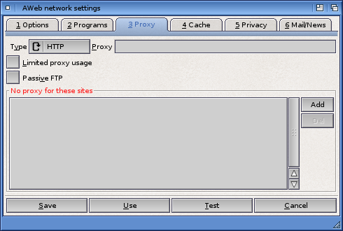

Network settings: Proxy

Proxy servers
A proxy server is a special server that acts as a gateway between your computer and the Internet. Instead of having to establish a connection to a server possibly on the other end of the world, a browser only connects to the proxy. The proxy server has a cache of the most popular pages, so there is a chance the page you requested is already there. If not, the proxy server retrieves the document for you. This will decrease the traffic on the network, thus speeding up websurfing.
Sometimes a proxy server is the only way to connect via your Internet Service Provider, thereby acting as a firewall.
Configuring a proxy
First, choose the protocol you want to define the proxy for. Use the chooser for this, it has 4 options:
Then type in the address of the proxy in the proxy field. Make sure it is in one of these two forms:
http://proxy.foo.bar
http://proxy.foo.bar:8080
where the name and port number may differ, of course.
If the address doesn't start with "htt..", AWeb will prepend this to the address.
Limited proxy usage
Some proxies can't handle submitting forms with METHOD=POST or authorized pages correctly. If you have problems with such pages, try selecting this checkbox. It allows AWeb send these pages directly to the server and not via the proxy.
If you are working from behind a firewall and you experience problems using FTP, try selecting this checkbox. It tells AWeb to use a different way of making the necessary FTP connections that will more likely work from behind a firewall.
No proxy for these sites
If this list contains site names (also known as locations or host names), then documents and images from these sites will never be retrieved through the proxy.
Use the Add button to add a new entry, and the Del button to delete the currently selected entry. Double-click on an entry to edit the name in place.
You may type simple host names, or use pattern matching. If a string contains pattern matching characters, it's matched against the full url, not only the host name. This enables you to selectively use the proxy for files from a server.
 Programs
Programs  Settings requesters
Settings requesters  Cache
Cache